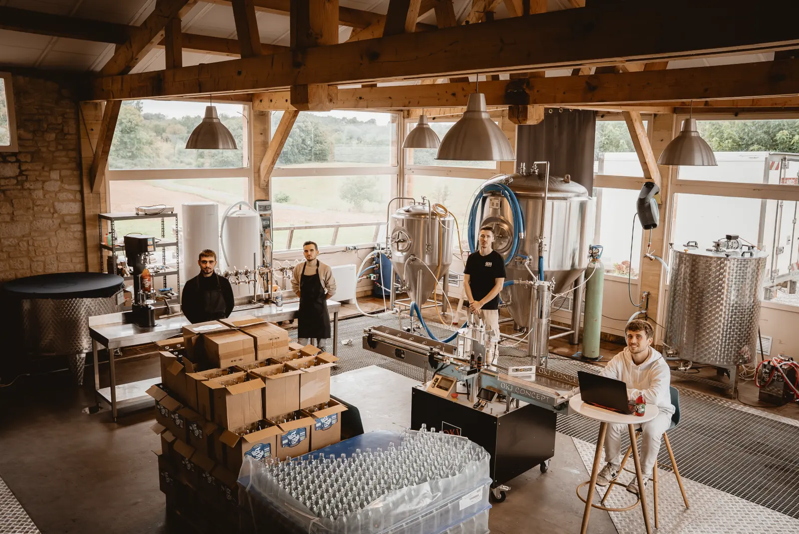
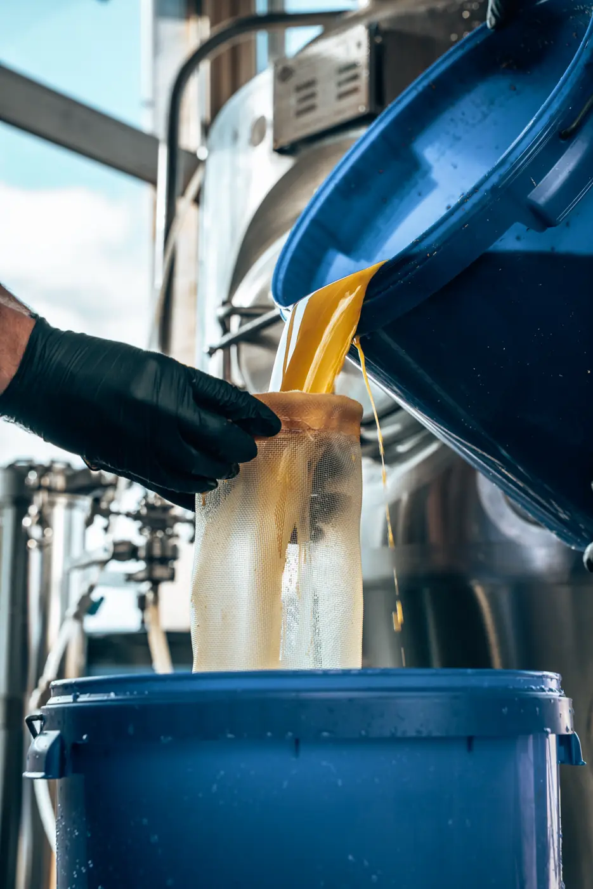

Chez GOA, on brasse un kombucha vivant, bio et non pasteurisé, au cœur du Périgord. Du thé, du sucre de canne, une culture patiemment entretenue — et le temps qu’il faut.

Camille et Mathis ont fondé GOA avec une idée simple : proposer une vraie alternative aux sodas industriels, sans rien céder sur le goût. Aujourd’hui, l’équipe brasse chaque semaine dans sa propre brasserie, entre Sarlat et Montignac.
| Fondé | Périgord Noir |
|---|---|
| Brassé à | Saint-Geniès (24) |
| Label | Agriculture biologique |
| Procédé | Non pasteurisé |

(02b) — Les étiquettes